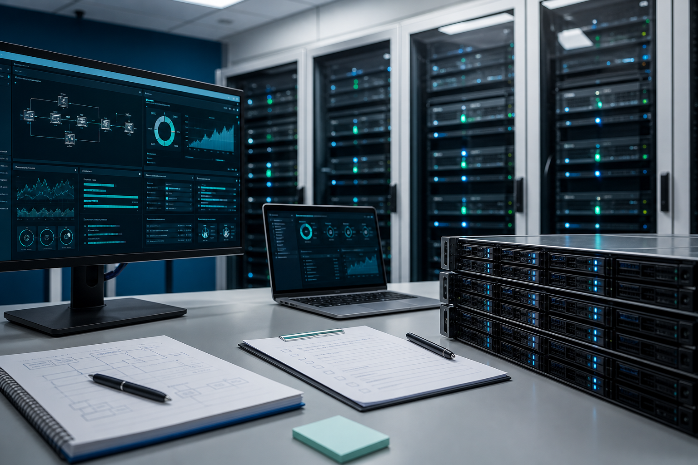

Altyapı
Sunucu, Sanallaştırma ve Bulut
Windows Server, domain, cloud server, Hyper-V, VMware ve dosya sunucusu geçişlerinde kontrollü planlama.
- Keşif ve bağımlılık analizi
- Kesinti penceresi ve geri dönüş planı
- Devreye alma ve teslim dokümanı